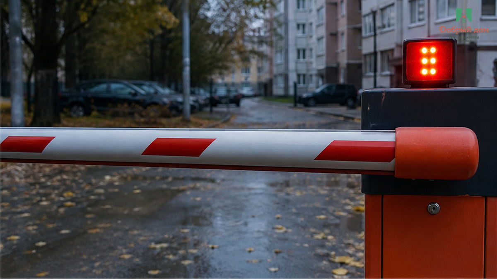
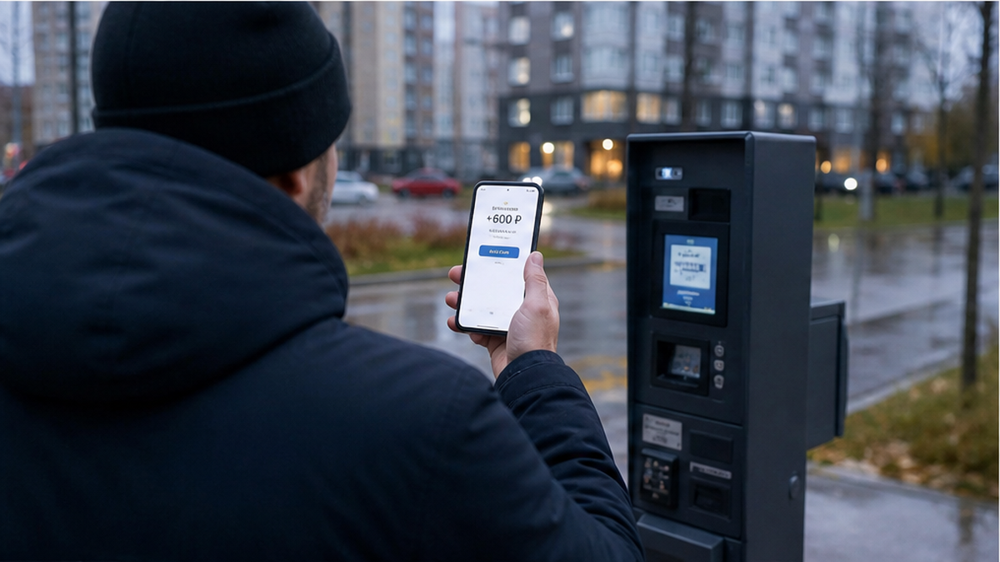
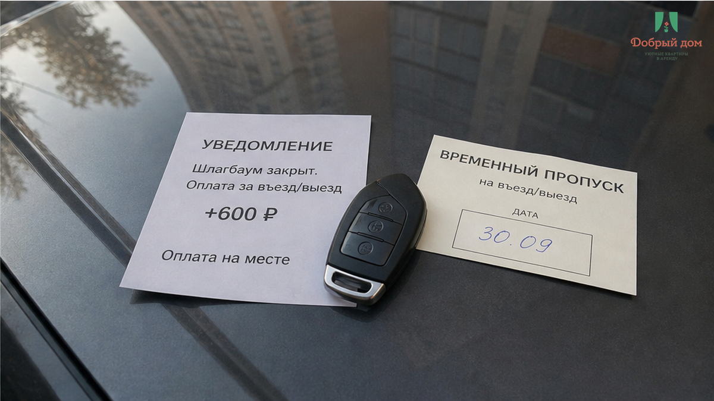

«Мы стоим перед шлагбаумом. В домофон говорят, что пропуска на наш номер нет и не будет. Куда нам ехать?» — это сообщение прилетело мне в чат от женщины, которая снимала квартиру не у меня. Пара ехала в Тюмень своим ходом, взяла жильё на две ночи по 4 800 ₽ — 9 600 ₽ уже лежали у хозяина. В объявлении было написано ровно четыре слова: «парковка рядом, бесплатно во дворе». В переписке хозяин это подтвердил: «двор свободный, встанете без проблем». Машина с вещами приехала затемно, двор оказался закрытым — шлагбаум, чужие номера в базе, охрана, которая физически не может пустить внутрь незнакомый автомобиль. Никакого злого умысла. Просто «парковка рядом» и «пропуск на ваш номер» — это два разных мира, и между ними никто не построил мост.
Дальше был круг: гостям открыли квартиру, ключи выдали, заселение как бы состоялось — а машина осталась снаружи. Ближайшая платная стоянка — 200 ₽ в час. Три часа поисков, звонков в УК, попыток «договориться с охраной» — это 600 ₽ сверху и испорченный вечер. Формально хозяин ничего не нарушил: квартира есть, кровать есть, вода горячая. Фактически человек заплатил 9 600 ₽ за жильё и ещё 600 ₽ за то, что его машина не поместилась в чужое обещание.
Я хост посуточной в Тюмени. Это «Добрый дом». Пишу в Telegram · MAX.

Я попросил скрин диалога с хозяином — не чтобы кого-то ловить, а чтобы понять, где именно порвалось. Порвалось в самом начале.
Гость: «Мы на машине, можно где-то поставить?»
Хозяин: «Конечно, парковка рядом, во дворе бесплатно».
Гость: «Отлично, бронируем».
Вот и весь разговор. Два сообщения, девять с половиной тысяч рублей и полная уверенность, что вопрос закрыт. Хозяин не соврал: во дворе действительно есть места и они действительно бесплатные — для жильцов дома с оформленным пропуском. Гость не тупил: он спросил ровно так, как спрашивают все нормальные люди. Просто вопрос был сформулирован в мире «можно ли», а ответ нужен был из мира «как именно».
Когда пара уже стояла у шлагбаума и написала хозяину, ответ пришёл через двадцать минут: «а, там пропуск нужен, я не знал, что у вас машина». Хотя про машину было в первом же сообщении. Дальше — «поставьте где-нибудь на улице, тут все так делают». Это и есть та самая точка, где обещание превращается в чужую проблему. Молчание в чате в момент заезда — отдельный жанр, я про него уже писал: перевели 3 000 предоплатой — тишина в чате.
«Рядом» — самое пустое слово в объявлениях. Рядом с чем? В скольких минутах? Через дорогу с четырьмя полосами или во дворе? Гость читает «рядом» и представляет, что выходит из машины и поднимается в квартиру. Хозяин пишет «рядом» и имеет в виду «где-то в этом районе точно можно встать, люди же как-то живут». Та же болезнь у слова «рядом с вузом» — я разбирал её отдельно на примере квартир к 1 сентября в трёх остановках от корпуса. Одна и та же логика: расплывчатое слово вместо конкретного числа.
Парковка — это не слово в объявлении. Не галочка в фильтре «есть парковка». А пропуск на конкретный государственный номер, внесённый в базу до вашего приезда.
Всё остальное — надежда. Надежда на то, что охрана окажется добрая. Что шлагбаум сломан. Что сосед выехал и место освободилось. Что в будний вечер двор полупустой. Иногда надежда срабатывает — и тогда гость думает, что так и должно быть. А потом попадает в дом, где въезд считают по номерам, и платит 600 ₽ за то, что кто-то поленился написать одну строчку.
Отдельная ловушка — люди, которые ищут «квартиры посуточно Тюмень недорого» и сравнивают только цену за ночь. 4 800 ₽ против 5 200 ₽ выглядит как экономия 400 ₽. Плюс 600 ₽ платной стоянки — и «дешевле» превратилось в «дороже», а сверху ещё три часа нервов после дороги. Цена ночи — не вся цена. Настоящая цена собирается на месте, у закрытого шлагбаума.

Кто должен закрывать вопрос со шлагбаумом — хост или гость? Хост скажет: «я не управляющая компания, пропуска не я выдаю». Гость скажет: «я платил за жильё с парковкой, разбирайтесь». Оба по-своему правы, и именно поэтому машина стоит на улице.
Мой ответ: это зона хоста, целиком. Потому что хост знает свой дом, знает УК, знает, работает ли шлагбаум по номерам или по брелоку, и может выяснить это один раз за всю жизнь квартиры. Гость такой возможности не имеет физически. Если вы считаете иначе — напишите мне, разберём ваш случай: Telegram или MAX. Отвечаю сам, не бот.

Когда человек пишет «мы на машине», я не отвечаю «парковка рядом». Я задаю встречный вопрос: какой номер? И дальше — либо номер уходит в список на въезд заранее, либо я честно говорю: во дворе этого дома въезд по пропускам жильцов, гостевого нет, ближайшее место — вот здесь, вот сколько стоит, вот фото. И человек решает до перевода денег, а не после.
Если хост не может ответить на вопрос про пропуск за пять минут — это не «мелочь». Это значит, что он не управляет объектом, а просто сдаёт ключи. Нет. Так не заселяем.
С кодовым заездом та же дисциплина: код, этаж, подъезд и парковка приходят одним сообщением заранее, чтобы человек ночью не искал, кому звонить. Как это выглядит на практике — писал в тексте про бесконтактное заселение посуточно в Тюмени. И логистика приезда-отъезда тоже считается заранее: у кого поезд, у кого чемоданы, у кого машина — разбор про окно между выездом и вокзалом.
И ещё одно. Когда снимаешь квартиру посуточно в Тюмени от хозяев, без посредников, у тебя есть прямой человек, с которым можно решить вопрос со шлагбаумом за один звонок. Когда между вами три перепродажи и оператор в чате — вопрос будет висеть ровно столько, сколько висел у той пары. Это, пожалуй, единственное реальное преимущество прямой аренды, о котором стоит говорить.

Перед переводом денег задайте хосту ровно одну фразу:
«Куда ставить машину и есть ли пропуск на мой номер?»
Не «есть ли парковка». Не «можно ли где-то встать». А именно так — с номером и словом «пропуск». Хороший хост ответит конкретикой: «номер внесу сегодня, въезд с торца, шлагбаум по камере». Плохой ответит «да там всё нормально, поставите». Второй ответ — это уже ваши будущие 600 ₽.

Сначала проверка. Потом перевод. Не наоборот. Слово «парковка» без номера машины и без фото места — это не услуга, а настроение. Настроение меняется у шлагбаума.
Что должно быть у вас на руках до оплаты, если едете на машине:
Шесть строк переписки. Пять минут. Это дешевле, чем три часа на платной стоянке после трассы.

Едете в Тюмень на машине и хотите заранее знать, где встанет ваш автомобиль — напишите мне номер, я проверю въезд до брони. Telegram · MAX · менеджер · забронировать · добрыйдом-72.рф · тел. +7 993 574-83-22.